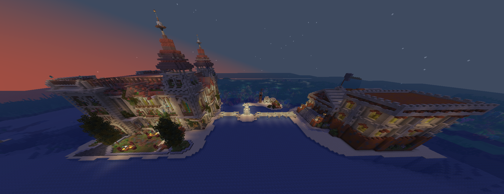

Город
Город — это спавн и торговое сердце сервера. Он находится в центре карты, на острове посреди океана, и служит безопасной зоной для всех игроков.

📷Скриншот: город-спавн на центральном острове
положите файл spawn.png в assets/screenshots/
Безопасная зона
Пока вы на центральных островах — действует безопасная зона: здесь нельзя устраивать PvP. Стоит
покинуть острова — и начинается большой опасный мир.
Острова города
Город состоит из главного острова и дополнительных островов с домами НПЦ:
✎Остров контрактовНПЦ, у которого подписывают задания за награды.
⚖Торговый Центр (ТЦ)Пронумерованные бутики: берите в аренду и торгуйте.
Станции на главном острове
На главном острове расположены станции для снаряжения. Все рецепты крафта — на странице Рецепты крафта.
⚙ИнженерКрафт кастомных предметов из материалов боссов.
♻УтилизаторРазбирает кастомные предметы обратно в осколки-ресурсы.
Зачем приходить в город
Даже воюющей фракции город нужен: здесь собирается лучшее снаряжение у Инженера, берутся контракты и идёт
торговля. Поэтому город — перекрёсток интересов всего сервера.